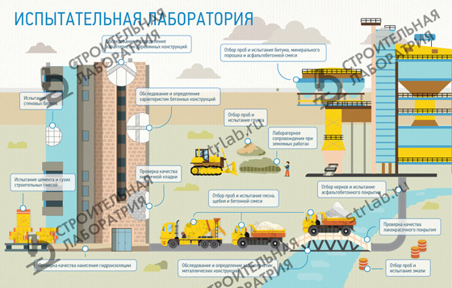

Аккредитованная Строительная Лаборатория предназначена для проведения специализированных исследований, позволяющих определить характеристики и технические свойства зданий, сооружений, а так же материалов из которых они возводились. Каждая строительная лаборатория, оказывающая специализированные услуги, обязательно должны иметь аккредитацию и лицензию на оказание услуг.
Лабораторные исследования могут потребоваться непосредственно в процессе возведения зданий и сооружений. Строительная лаборатория обязательно должна иметь все необходимые приборы и специализированное оборудование, которое позволит провести полный комплект испытаний различных материалов.
В числе услуг, оказываемых строительными лабораториями можно назвать:
Аккредитованные учреждения помимо испытания строительных материалов осуществляют контроль качества дорожных работ. Аттестованная дорожная лаборатория в полном объеме проводит технические, научные и другие виды испытаний в соответствии с той или иной строительной деятельности.
Аккредитованная дорожная лаборатория проводит исследования методами неразрушающего и разрушающего контроля, основываясь на действующих нормативах, ГОСТах и стандартах. По завершению работ заказчик получает оформленный соответствующим образом протокол, в котором отражаются полные результаты контроля.
Лабораторные испытания могут проводиться как непосредственно перед началом строительства, так и в процессе проведения работ. Важно помнить, что если своевременно провести строительную экспертизу и обследование возводимых конструкций, заказчик имеет возможность в кратчайшие сроки устранить все выявленные дефекты и определить причины их возникновения, благодаря чему срок безаварийной эксплуатации объекта увеличивается в несколько раз. Именно по этой причине строительная и дорожная лаборатория должны стать незаменимыми помощниками абсолютно для каждой строительной организации, независимо от ее сферы деятельности.
